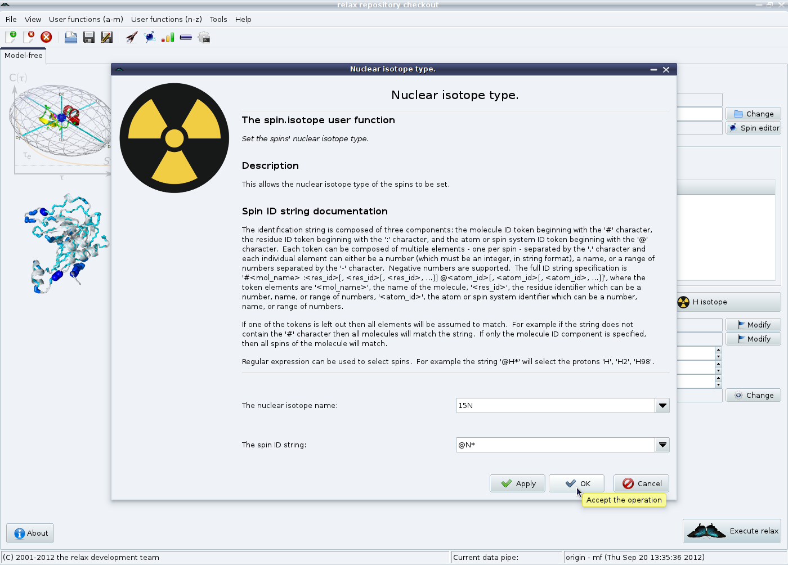

Next: d'Auvergne protocol GUI mode Up: The new protocol in Previous: d'Auvergne protocol GUI mode Contents Index
As the PDB file contains no isotope information, this needs to now be specified. First click on the “X isotope” button to set the nuclear isotope type of the heteronuclei:
|

|
As nitrogen relaxation is being studied, the nuclear isotope name can be left as “15N” and the spin ID string to “@N*”. Therefore simply click on the “Ok” button. Exactly the same procedure can be used for the proton with the “H isotope” button.